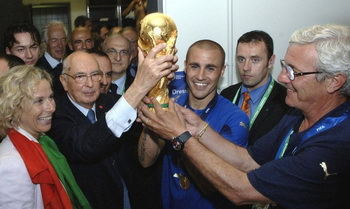

ФУТБОЛ

Футбол — командный вид спорта, в котором целью является забить мяч в ворота соперника ногами или
другими
частями тела (кроме рук)
большее количество раз, чем команда соперника.
Есть 17 официальных правил игры, каждое из которых содержит список оговорок и руководящих принципов.Эти
правила
предназначены для применения на всех уровнях футбола, хотя есть некоторые изменения для таких групп, как
юниоры,
взрослые, женщины и люди с ограниченными физическими возможностями. Законы очень часто формулировались в
общих
чертах, которые позволяют упростить их применения в зависимости от характера игры.